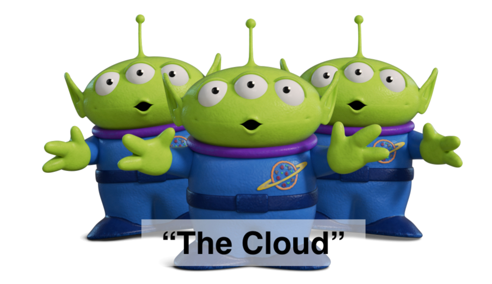
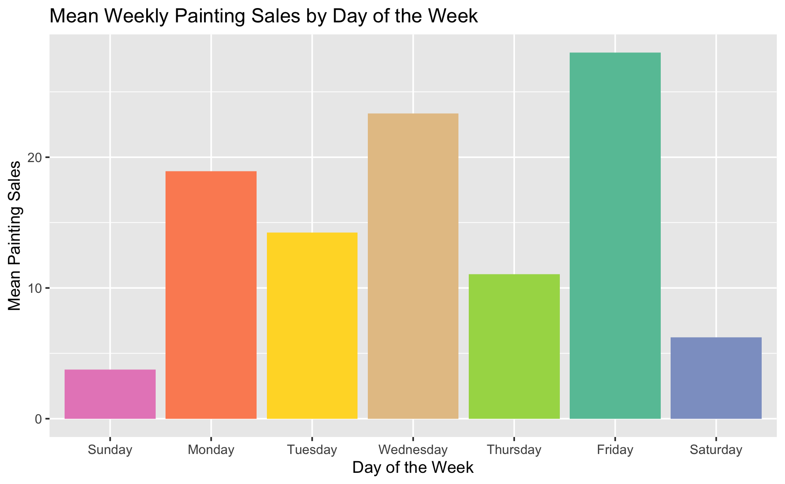
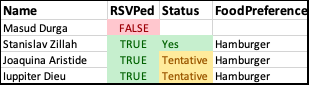

Gus Lipkin’s Awesome Website
About Me
My Résumé
My Blogs
My Professional Blog
My Personal Blog
Contact Me
Categories
All
(7)
Excel
(1)
Python
(1)
Python: PySpark
(1)
R
(7)
R: Tidy Tuesday
(1)
R: apply
(1)
R: data.table
(1)
R: ggplot2
(2)
R: openxlsx
(1)
R: sparklyr
(1)
R: tidytext
(1)
R: tidyverse
(3)
Spark
(1)
My Professional Blog

Moving Local Data Pipelines to Spark: The Easy Way with R and Python
R
R: sparklyr
Python
Python: PySpark
Spark
Aug 27, 2022
10 min
Does Student Debt Correlate with Retirement Funds?
R
R: Tidy Tuesday
May 12, 2022
6 min

Reordering Bar and Column Charts with ggplot2 in R
R
R: tidyverse
R: ggplot2
R: tidytext
Apr 14, 2022
12 min
Pivoting Data with tidyverse and data.table in R
R
R: tidyverse
R: data.table
Mar 31, 2022
43 min
Writing Faster R With Vectorization and the Apply Family
R
R: apply
Mar 14, 2022
15 min

Making Pretty Excel Files in R
R
R: openxlsx
Excel
Feb 23, 2022
10 min
Grouped and Stacked Bar Charts in R
R
R: tidyverse
R: ggplot2
Feb 16, 2022
4 min
No matching items